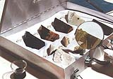
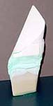
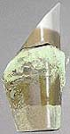
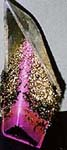
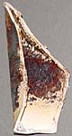
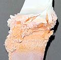

| Specimens of Osmosis
by Tina Lee
This
installation piece is the results of an experiment using the absorbency
of low fired ceramics and metallic salts. It all began when I noticed
some gradations of brown colouring appearing on some unglazed ceramic
flowers I had bought and stuck in the soil of a potted plant. Amazed
and curious of these gradations of pattern I began to experiment.
I ran an experiment to see if the gradations of colour could be
made permanent after firing. The majority of materials commonly
used in ceramics are non-soluble, which was no good for my experiment,
as the colorants would have to be completely dissolved and kept
in suspension to be able to be absorbed by a porous ceramic body.
After many weeks of research into possible candidates I discovered
metallic salts. Metallic salts are soluble and can be highly colorant.
This was perfect for my investigation but metallic salts are highly
hazardous and must be used in a tightly controlled environment.
I came across a few ceramic artists who use metallic salts in practice,
Steven Goldate and Les Blakebrough. These men were saviours to my
investigation that I had felt was almost at an end.
With all my gathered research I was able to begin the tests. I
had chosen only a few metallic salts compared to what was available:
Ferrous sulphate; Nickel sulphate; Potassium permanganate; Borax;
Zinc sulphate; Copper sulphate; Copper nitrate; Manganese sulphate;
Sodium carbonate; Cobalt sulphate; Cobalt nitrate; Sodium bicarbonate;
Silver nitrate.




It was amazing to see the dramatic changes that evolved during
the soaking period. The chemicals were completely saturating and
eroding the ceramic body. The sodium bi-carbonate looked like it
had exploded the body. The most dramatic colour before firing was
the potassium permanganate which made the body a very deep purple.
Following
the recommendations for firing from Goldate and Blakebrough, I tested
with an oxidisation firing as well as a reduction firing. It was
even more amazing after firing. Almost all the test pieces had changed
colour or dissolved the body. All my tutors were astonished by my
results. Especially my ceramic technologies tutor Rich Slade, who
was amazed by the nickel sulphate staying green after firing. Nickel
used in common ceramic practice turns glazes yellow/brown.
It was an intense project with amazing results. I went on to experiment
with screen-printing fluxes to create glaze writing on bare ceramics.
If you are interested in seeing more of this project it will be
showing in the EYA (Establishing Young Artist) exhibition, 31st
January to 9th February 2003 held in Birmingham, England. (Contact
me for further details)
Contact details
Tina Lee (BA hons Ceramic Design)
Web:
http://www.artshole.co.uk/tinalee.htm
http://www.tinalee.tk
Email:
suk_hun888@yahoo.com
Related Links:
Watercolors on Porcelain
The Alchemy of Watercolors On Porcelain
More Articles
|